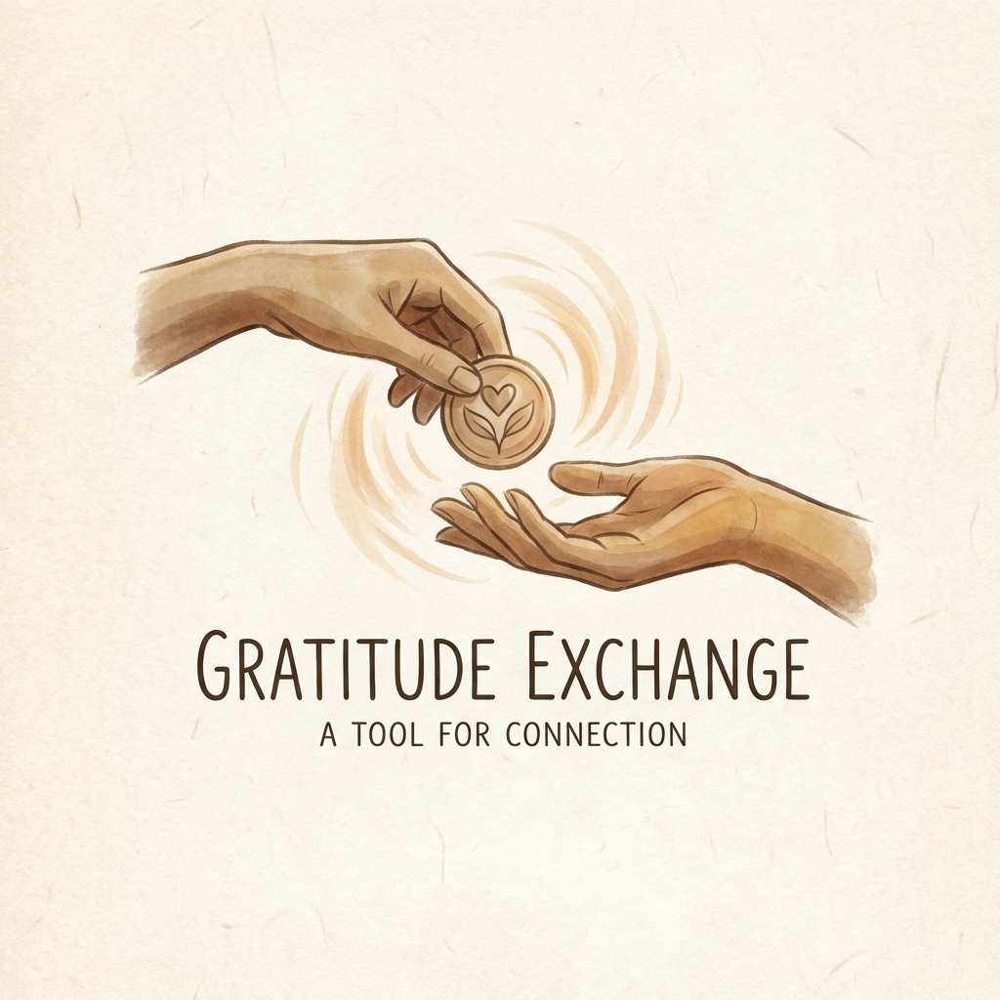
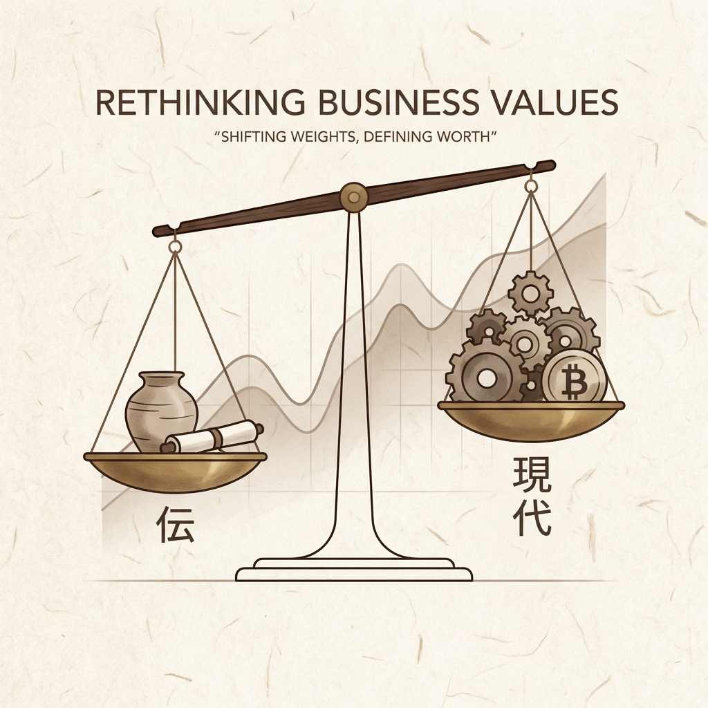
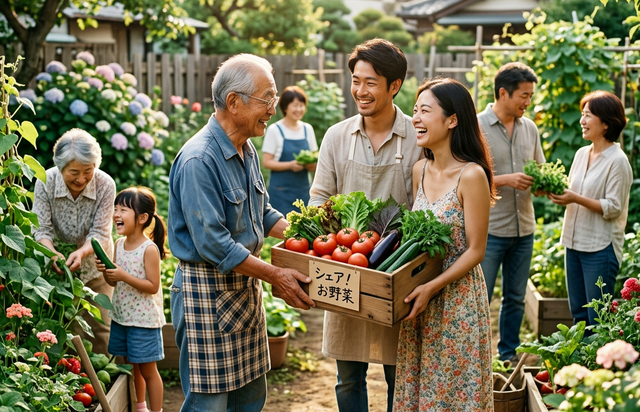
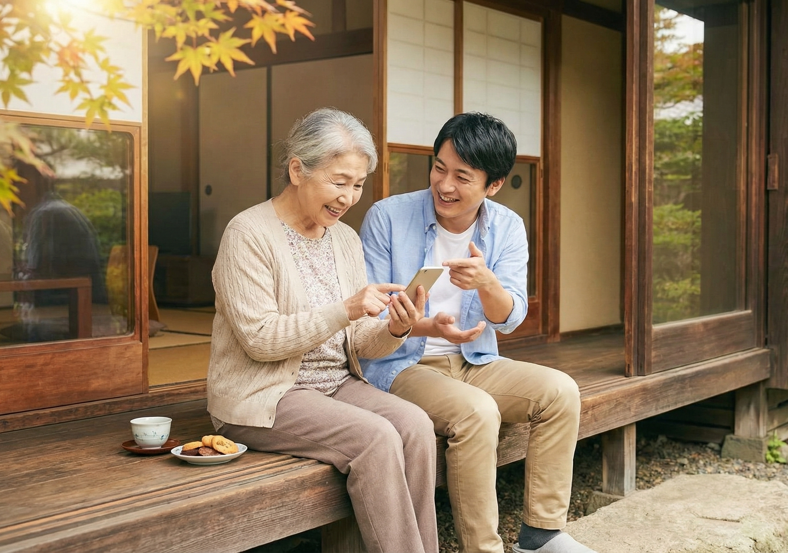
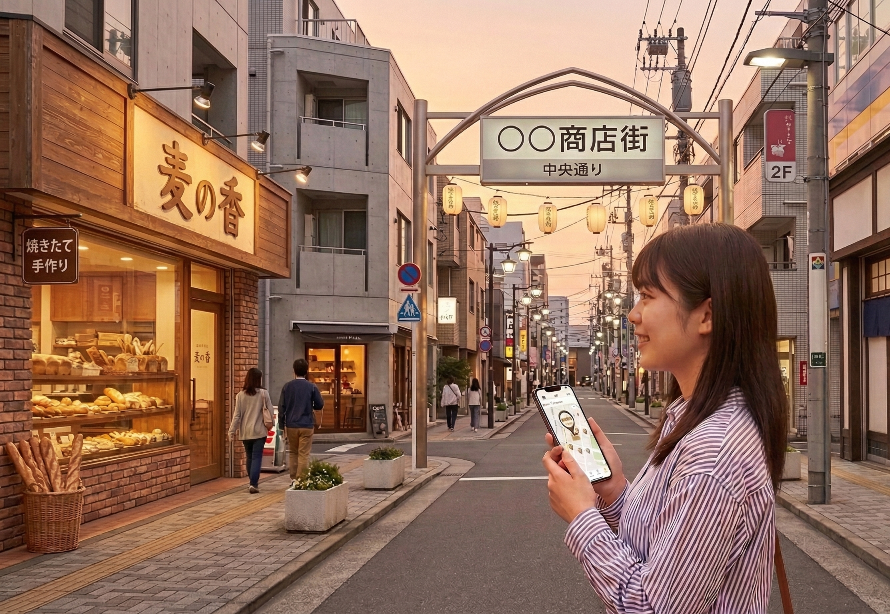
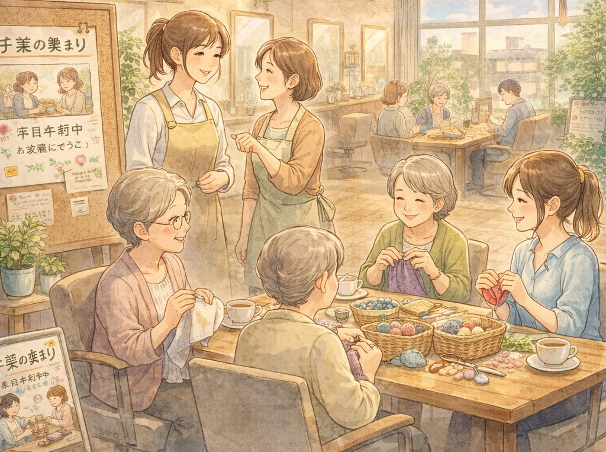

お金は本来、「ありがとう」を
交換する道具でした…

元々、お金とは価値をスムーズに交換するための『手段』に過ぎませんでした。
しかし現代では、いつの間にか「交換」ではなく、「増やすこと」自体が目的となってしまっています。
結果、経済は循環しなくなり、格差も拡大し、お金が「支配のための道具」となってしまっています。
「交換の道具」だったはずのお金が、いつしか私たちを「支配する主人」に変わってしまったのです。
評価されない「本当の価値」

この仕組みの中では、何事も「お金になるかどうか」が、すべての評価の基準となります。
結果、その仕事は「どれだけ他人(社会)の役に立つか」よりも、「どれだけ数字（収益）になるか」が優先されています。
そのせいで、命を支える農業や介護、子供や社会の未来を創る教育といった「本当に価値のある仕事」が正しく評価されない歪みが生まれています。
やりたいことができない社会
また私たちは「儲からないから」という理由だけで、 やりたいことや、価値ある活動を諦めなければならないことがあります。
これが意味することは、このシステムのせいで、私たちの生き方や多様性そのものが縛られているということ。
「目先のお金になるかどうか」という狭い物差しが、 あなたの、そして社会の様々な可能性を奪っているのです。
だからこそ、私たちは今、お金をもう一度「ただの道具」に戻す必要があります。
あなたの中にも、
まだ埋もれている価値がある

家庭菜園で採れすぎた野菜、使わなくなったけれどまだ使える物、ちょっとした知識や経験。
それらは「売るほどではない」と見過ごされがちですが、地域の誰かにとっては十分にありがたい価値です。
人と人の交流が少し進むと、埋もれていたものが誰かの「ありがとう」に変わっていきます。
地域の助け合いで、暮らしはもっと、楽になる
物価高や日々の負担が増える今、暮らしの安心をお金だけで支えるのは難しくなっています。
地域の中で助け合いやお裾分けがめぐることで、日常の負担を少し軽くし、いざという時に頼れる関係を育てていく。
楽市は、そんな新しい地域の支え合いをつくるアプリです。
楽市が目指すコミュニティの仕組み

今、私たちに必要なのは「いかにお金を増やすか」ではありません。 それは、終わりのない過当競争へと向かう道です。
本当に必要なのは、もう一度「ただの交換手段」に戻すことです。
支配の象徴となってしまった今のシステムから、少しだけ距離を置き、ただ純粋に「ありがとう」を交換し合える仕組み。
それを地域の助け合いとして実装したのが、コミュニティアプリ「楽市」です。
現代のミスマッチを解消する
コミュニティアプリ「楽市」

楽市は、『利益』の最大化ではなく、『循環』の最大化を目指すコミュニティアプリです。
仕組みはとてもシンプル。昔から日本にある「お互い様」の精神と同じです。
自分の得意や余剰を誰かに提供し、ポイントを受け取る。
誰かの手助けを受け、感謝としてポイントを渡す。
楽市は、昔の社会では暗黙で成り立っていた「お互い様」の精神を、「楽ポイント」で見える化するアプリです。
これまで「0円」とされてきたあなたの知識やお裾分けの野菜、大切にしていた愛用品を滑らかに循環させ、お金への依存から少しずつ自由になることを目指しています。
楽市の特徴：お金と何が違うのか？
「楽市」はお金（法定通貨）とは全く異なる、2つのコンセプトがあります。
1. 上限と下限がある
「楽ポイント」には、あえて限界を設けています。
- 貯め込みの禁止:
上限に達すると、それ以上は貯められません。「稼ぎすぎ貯めすぎ」に意味がなくなる設計です
貯めることに意味がなくなれば、適切な循環が生まれ、格差も権力関係もなくなります。 - 自発的な貢献:
下限に達すると、一時的に「受け取ること（御恩）」ができなくなります。
「もらうばかり」ではなく、「次は自分に何ができるか」という貢献の心が、自然に芽生える仕組みです。
2. 理想は「ゼロ（中庸）」の状態
楽市の経済圏では、稼ぐことに意味はないので、プラスやマイナスの数字に執着する必要はありません。
みんなが中庸を目指すことで、結果的により多くの循環が起こる仕組みになっています。
- マイナスは「信頼の先払い」: 一時的にマイナスになっても、それは「いつか返せばいいもの」。負い目を感じる必要はありません。
- プラスは「循環の停滞」: 溜まりすぎたプラスは、むしろ循環を止めているサイン。誰かに譲るタイミングです。
多くの人と交流し、交換を楽しみながら、「ゼロ（中庸）」に近い状態を保つ。
どちらかに偏りすぎないフラットな関係こそが、私たちが目指す理想のコミュニティです。
| 項目 | 現代のお金（円） | 楽ポイント |
|---|---|---|
| 目的 | 蓄積・独占 | 循環・共有 |
| 理想の状態 | 多ければ多いほどいい | ゼロ（中庸） |
| 心の動き | 減るのが怖い（不安） | 巡るのが楽しい（安心） |

利益を溜め込むのではなく、感謝と共に循環させる。
それが「楽市」の経済圏です。
楽市の3つのシーン

奉公する
誰かを助ける
自分にできることが、誰かの喜びに
お店を開くほどではなくても、今の自分にできることで誰かを笑顔にすることができます。
- モノを分ける: 家庭菜園で採れすぎた野菜や、まだ使える不用品を譲る。
- 特技を活かす: 趣味の手芸や占い、得意なことをちょっとだけお裾分け。
- 手助けをする: 家具の組み立てや買い物、誰かの話し相手になること。
他者へ価値を届けた証として、楽ポイントが加算（+）されます。

御恩を受ける
誰かの助けを受け取る
困ったことを誰かに助けてもらう
ビジネスのような割り切った関係ではなく、感謝でつながる温かい助け合いの形を目指しています。
- モノを借りる: 必要な道具を借りたり、不用品を譲り受けたり。
- 知恵を借りる: スマホの設定やパソコンの不調、ちょっとした相談。
- 手を借りる: 重い荷物の運搬や庭仕事、急な買い物のお手伝い。
他者の価値を受け取った証として、楽ポイントが消費（-）されます。

楽座
地域のお店を応援する
地域内のお店を知るきっかけに
楽ポイントを使ってお店のサービスを体験することで、今まで知らなかった「街の名店」や「こだわりのサービス」を知るようになるきっかけに。
お金だけではない「顔の見える交流」を広げ、地域全体を活性化していきます。
- お店を知るきっかけ： サービスや商品を気軽に体験し、お店との新しい縁を作ります。
- 街の再発見： 広告には載っていない、地元ならではの価値を直接知ることができます。
- 地域で支え合う： 住民同士、お店同士が支え合うことで、強い地域経済を育てます。
「楽市」は、今のお金（通貨）を否定するものではありません。 それと上手く役割を分担し、共存することで、地域の生活に新しい選択肢と活気を作り出すことを目指しています。
蜈ｷ菴鍋噪縺ｪ莠､謠帑ｾ・/h2>

螳ｶ蠎ｭ闖懷恍
鬟溘∋縺阪ｌ縺ｪ縺・眠魄ｮ縺ｪ驥手除繧偵∽ｻ悶・鬟滓攝繧・し繝ｼ繝薙せ縺ｨ莠､謠・/p>

雜｣蜻ｳ縺ｮ繧ｳ繝ｼ繝偵・
螂ｽ縺阪〒豺ｹ繧後ｋ繧ｳ繝ｼ繝偵・縺後∬ｪｰ縺九∈縺ｮ萓｡蛟､謠蝉ｾ帙↓

謇倶ｽ懊ｊ蜩・/h3>
邱ｨ縺ｿ迚ｩ縲・匕蝎ｨ縲∵焔闃ｸ蜩√↑縺ｩ繧貞ｿ・ｦ√↑莠ｺ縺ｸ
螳ｶ蠎ｭ闖懷恍
鬟溘∋縺阪ｌ縺ｪ縺・眠魄ｮ縺ｪ驥手除繧偵∽ｻ悶・鬟滓攝繧・し繝ｼ繝薙せ縺ｨ莠､謠・/p>
雜｣蜻ｳ縺ｮ繧ｳ繝ｼ繝偵・
螂ｽ縺阪〒豺ｹ繧後ｋ繧ｳ繝ｼ繝偵・縺後∬ｪｰ縺九∈縺ｮ萓｡蛟､謠蝉ｾ帙↓

謇倶ｽ懊ｊ蜩・/h3>
邱ｨ縺ｿ迚ｩ縲・匕蝎ｨ縲∵焔闃ｸ蜩√↑縺ｩ繧貞ｿ・ｦ√↑莠ｺ縺ｸ
繝昴う繝ｳ繝医ｒ蠕励ｋ縺薙→閾ｪ菴薙′逶ｮ逧・〒縺ｯ縺ゅｊ縺ｾ縺帙ｓ縲・br>繝昴う繝ｳ繝医・縺ゅ￥縺ｾ縺ｧ縲悟挨縺ｮ萓｡蛟､縺ｸ縺ｮ螟画鋤陬・ｽｮ縲阪→縺励※讖溯・縺励∪縺吶・br>縺昴・邨先棡縲∵ｳ募ｮ夐夊ｲｨ・亥・・峨∈縺ｮ萓晏ｭ倥′貂帙ｊ縲∵律蟶ｸ縺ｮ謾ｯ蜃ｺ繧呈椛縺医↑縺後ｉ繧ゅ∫函豢ｻ縺ｮ雎翫°縺輔ｒ蜷台ｸ翫＆縺帙ｋ縺薙→縺悟庄閭ｽ縺ｫ縺ｪ繧翫∪縺吶・
「過度な利益追求でもなく、自己犠牲でもない」
中間経済圏の創造
✓ 大小さまざまな価値が正当に認識される
✓ お金を介さずとも滑らかに循環する
✓ より人間らしい経済のあり方を実現する
お金だけでは測れない、
人間的な繋がりに基づいた
新しい豊かさの形を、共に創造しましょう。